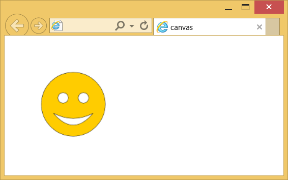

Элемент <canvas>
| Internet Explorer | Chrome | Opera | Safari | Firefox |
| 9 | 1 | 9 | 2 | 1.5 |
| Android | Firefox Mobile | Opera Mobile | Safari Mobile |
| 2.1 | 2 | 9 | 2 |
Создаёт область, в которой при помощи JavaScript можно рисовать разные объекты, выводить изображения, трансформировать их и менять свойства. При помощи элемента <canvas> можно создавать рисунки, анимацию, игры и др.
Синтаксис
<canvas id="идентификатор">
</canvas>Закрывающий тег
Аттрибуты
- height
- Задаёт высоту холста. По умолчанию 300 пикселей.
- width
- Задаёт ширину холста. По умолчанию 150 пикселей.
Также для этого элемента доступны универсальные атрибуты и события.
Пример
<!DOCTYPE html>
<html>
<head>
<title>canvas</title>
<meta charset="utf-8">
<script>
window.onload = function() {
var drawingCanvas = document.getElementById('smile');
if(drawingCanvas && drawingCanvas.getContext) {
var context = drawingCanvas.getContext('2d');
// Рисуем окружность
context.strokeStyle = "#000";
context.fillStyle = "#fc0";
context.beginPath();
context.arc(100,100,50,0,Math.PI*2,true);
context.closePath();
context.stroke();
context.fill();
// Рисуем левый глаз
context.fillStyle = "#fff";
context.beginPath();
context.arc(84,90,8,0,Math.PI*2,true);
context.closePath();
context.stroke();
context.fill();
// Рисуем правый глаз
context.beginPath();
context.arc(116,90,8,0,Math.PI*2,true);
context.closePath();
context.stroke();
context.fill();
// Рисуем рот
context.beginPath();
context.moveTo(70,115);
context.quadraticCurveTo(100,130,130,115);
context.quadraticCurveTo(100,150,70,115);
context.closePath();
context.stroke();
context.fill();
}
}
</script>
</head>
<body>
<canvas id="smile" width="200" height="200">
<p>Ваш браузер не поддерживает рисование.</p>
</canvas>
</body>
</html>Результат примера показан на рис. 1.

Рис. 1. Вывод рисунка с помощью <canvas>
Спецификация ?
| Спецификация | Статус |
|---|---|
| WHATWG HTML Living Standard | Живой стандарт |
| HTML5 | Рекомендация |
Спецификация
Каждая спецификация проходит несколько стадий одобрения.
- Recommendation (Рекомендация) — спецификация одобрена W3C и рекомендована как стандарт.
- Candidate Recommendation (Возможная рекомендация) — группа, отвечающая за стандарт, удовлетворена, как он соответствует своим целям, но требуется помощь сообщества разработчиков по реализации стандарта.
- Proposed Recommendation (Предлагаемая рекомендация) — на этом этапе документ представлен на рассмотрение Консультативного совета W3C для окончательного утверждения.
- Working Draft (Рабочий проект) — более зрелая версия черновика после обсуждения и внесения поправок для рассмотрения сообществом.
- Editorʼs draft (Редакторский черновик) — черновая версия стандарта после внесения правок редакторами проекта.
- Draft (Черновик спецификации) — первая черновая версия стандарта.
Особняком стоит живой стандарт HTML (Living) — он не придерживается традиционной нумерации версий, поскольку находится в постоянной разработке и обновляется регулярно.